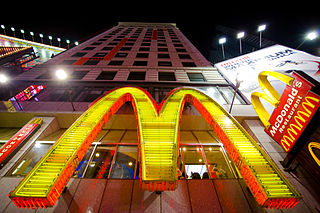

Do you recall the fast food chain as McDonald’s or MacDonald’s?

This is an especially odd alternate memory, since the “golden arches” are such a familiar symbol, most Americans can describe the brand icon, Ronald McDonald, without having to look him up, online, and so on.
History in this reality: The original restaurant was started in 1940 by Dick and “Mac” McDonald. The restaurant was always McDonald’s.
Ray Croc got involved in 1955 and bought the rights to the restaurant (and brand name) six years later.
The name was never MacDonald’s.
For more McDonald’s history, see McDonald’s official website, or the Wikipedia summary.
I was surprised when McDonald’s was mentioned as part of a possible alternate reality/history, because — for many years — I believed the restaurant was MacDonald’s. I ate there about once a month, mostly when my work involved travel and I wanted fast, reliable food.
During an argument with friends, in which I insisted it had to be MacDonald’s because they serve a Big Mac, we went to the restaurant and… they were right.
At the time, it seemed very odd that I’d have made that kind of mistake. I’m a bit of a fanatic about spelling, which is why my early career involved freelance proofreading and editing for MIT.
But, I decided I must have been confused, and didn’t think about it again until this topic came up in a Mandela Effect thread.
To be honest, I’m not certain mine was an alternate memory, not confusion. However, I’ve had 20 years to convince myself that I was “just confused,” so any conclusion I reach now is unreliable.
I’m moving Mac/McDonald’s comments (those with that specific focus) to this article. There may be other, related comments among the Major Memories comments pages, but if they cover a wide range of topics, I’m leaving them where they were posted.
If you remember the fast food chain as MacDonald’s, add your comment to the conversation.
I’ve only ever bought food from “McDonald’s”, but I’ve encountered the “MacDonald’s” spelling in internet forums and comments with enough frequency that I genuinely believed that the spelling changed depending on the country it located in. I figured it was a situation similar to how “Exxon” gas stations in America are “Esso” stations in Canada and Europe where they’re all recognizably part of the same corporation despite minor differences in name and logo. It made perfect sense to me that it could be spelled “MacDonald’s” in Scotland, for example, so I never questioned it until now. The fact that there was never a “MacDonald’s” anywhere in the world at any point in history does not strike me as “right.”
Thanks, Fiona, for making a separate article on this. I just spent about 30 minutes trying to find the port that the family immigrated through, but am not having much luck. I’d like to see a signature, much like you had for the “Entire” name event that is also logged in it’s own article.
I posted a question on it on the New Hampshire site wondering if I’ll get any information there.
As we can see with both MacDonald and McIntyre being McDonald and McEntire, the change goes all the back to the origination of the actual name as best can be told.
It is very interesting that the names have Scottish and Irish heritage, and that they were both effected. I wonder if there is somehow a connection between the two events. It’s even more interesting that “McIntyre” in both spellings is pronounced “MACK-ENTIRE” instead of “MICK-ENTIRE” even though it is spelt the latter way.
I’ve read comments on here asking about people’s ancestry who are effected by this (as in people who experience ME). I’m not sure if you’ve ever queried people on that. It might be worth looking into. Perhaps there is a genetic connection, or if not a genetic connection, a connection quantumly or some other way to a specific point in history where this all split.
Interesting, Dan! I’m indulging my genealogy interests with the following, which is wandering slightly off-topic:
You probably already did this, but did you check the earliest NH census-type records for the McDonalds, to see if there are any immigration patterns in the neighborhood where they first lived? When all else fails, I’ve had luck tracing two or three families within houses of the family in question. Often, all or most records point to the same port of entry, if not the same port of emigration, and city/town/parish of origin.
(1910 census shows the family on South Main Street, in a mixed ethnic neighborhood, so you’d have to go earlier.)
I don’t have time to dig into this right now, but I’m seeing a likely Richard McDonald in 1910 census, Manchester Ward 8, Hillsborough, New Hampshire. (ED 147, page 10A) Father was Patrick J McDonald, born in Ireland, year of imm 1877 (Naturalized), foreman in a shoe factory. Mother was Margarite (imm 1884). Both parents read & wrote English, so those spellings might be correct (or not). Records for his brother Maurice (Morris in 1910) may provide additional info. Richard’s place of burial: Calvary Cemetery, Manchester, NH, though I doubt the headstone would provide much info; if it’s in a family plot, his parents’ headstones might be helpful.
I like your idea about seeing if there’s a genetic connection among us. However, due to privacy concerns, that would require the individuals to know (or look up) their family histories to see if/where our respective lines connect. I’m not sure that’s practical, and — as I understand it — about 50% of all American-born adults in the 1980 census had some Irish ancestry. (I still don’t know how they came up with that figure, and doubt its accuracy, but there it is.)
For the record, most of mine is through Counties Cork & (southern) Limerick, with some Travellers in the mix. The latter has always been a topic of debate… and I’ve speculated that there’s something very different about them/us. And then there’s my Plantagenet ancestry… another line that’s raised questions about how they came into power and what their true origins might be.
I think I’m a little younger than a lot of people here, but I always remember it being McDonald’s/Mickey D’s/McD, despite the Big Mac. HOWEVER, I do have a friend in Canada who, when telling me she’d gotten a job there, said in her area (Vancouver) it is widely pronounced MAC Donald’s, even though it’s spelled McDonald’s. In Australia they straight-up relabeled it Macca’s, since that was the nickname they gave it. This sounds more like a regional thing, than a change.
http://www.telegraph.co.uk/finance/newsbysector/retailandconsumer/9787581/McDonalds-rebrands-to-Maccas-in-Australia.html
Sarah, which part “sounds more like a regional thing”? If you’re saying that the Australian rebrand was regional, that’s true.
If you’re saying that we’re confused because our accents vary, regionally, you may not realize how literate our commenters are. We’re talking about spelling, not how the name is said.
This was one of those things I’ve never given any thought to until now. I remember McDonald’s opening for the first time in our town and it was a huge novelty, we’d stop in every weekend while shopping. I thought it was MacDonald’s until about the early 90s when I saw suddenly that it was “McDonald’s”. I figured they’d simply had a name change (which is quite common for brands; Opal Fruits = Starburst, Marathon = Snickers, etc) and never thought any more of it. But now I read that it was never MacDonald’s, ever O_O
Unless certain branches at the time accidentally spelt the name incorrectly. That would have been a huge goof but not impossible, especially in the UK where it was a new thing.
I swear MacDonald’s tasted much better though lol. If there was a reality shift much of the food in the old reality tasted better. My whole family has commented on how many foods don’t taste the same – as nice – anymore.
Jen, what an interesting observation! And I agree: When I still thought it was MacDonald’s, it was an era when their food tasted fresher and better. It never crossed my mind that, in another reality, MacDonald’s food was — and perhaps is — truly delicious and a tremendous value for money.
I remember seeing MacDonald’s once and thinking it was weird because I always thought it was spelled McDonald’s (which it obviously is now), so I guess my timeline somehow switched to that then switched back.
This one really got me thinking: might it be possible to link several MEs together, the common thread being a single immigration officer or port of entry, ca. mid-late 1800s? To me this could possibly account for Mc/MacDonald;McEntire/McIntyre; Schulz/Schultz; Berenstain/Berenstein.
A seemingly innocuous detail between 2 realities/time streams like a single staff member at a immigration depot could possibly account for these drastic changes. Although, it appears that the McEntire/McIntyre group emigrated to the US several decades before the other groups mentioned, but food for thought, nonetheless.
Matt A., you’ve raised a good point.
As I understand it, the spelling issue was more likely to originate at the port of emigration. Upon arrival in the U.S., clerks generally worked with each ship’s passenger lists. How the name was spelled on that list was how it was entered in U.S. records, unless the passenger noticed the error and had it corrected, then and there. I’ve heard that the “Ellis Island name” concept is largely a myth. (On the other hand, U.S. Census records have all kinds of weird spellings, and those are generally errors by the census takers, or the neighbors who volunteered names if the actual residents weren’t at home that day.)
Nevertheless, the issue might have been one or more semi-literate clerks at the point of departure. I’m not sure how it would help us understand Mandela Effect, but it might be interesting to trace these name changes to the immigrant families and see exactly what ships they traveled on, and from which ports.
Then again… what if some process of boarding the ship involved sliding between realities? I mean, if someone could choose (consciously or on a subconscious level) when and where they slide, leaving one country for another would be an ideal time for it to be less noticeable. It’s a new country with new rules and new friends; any major changes or gaffes wouldn’t be so noticeable upon arrival.
And, because I’m a writer, I think this could be an interesting plot element: Someone at the emigration (or immigration) point who — sending someone through a gate — might actually send that person through to a different reality. So much potential for variations on this idea!
My sister (age 40) calls it MacDonalds, very emphatically pronouncing the “Mac” part.
I, age 25, have always seen/heard McDonalds. As has the rest of my family.
Alternative universe or derp? Who knows~
I’m reminded of when I would go to McDonalds with my dad as a kid. When I first started being able to read on my own, I remember being confused to notice that it was spelled MacDonalds, as I’d always heard it pronounced “mick-Donald’s”. I also recall peeling the breading off chicken nuggets to eat them, and remember distinctly that the meat was white in color. My dad doesn’t remember my peeling the breading, nor the MacDonalds spelling. Years later, when McDonalds first announce white meat chicken nuggets I mentioned my confusion to my dad (I was confused because the chicken was always white for me), and he remembered differently than I. In my dad’s memory the meat of the chicken nuggets were very dark in color. Curiosly, I remember it never having been spelled MacDonalds, as well as it having also once been spelled MacDonalds.
Marty Mcfly went to the future in November of 2015 he’s responsible for all of this! (I’m somewhat joking but it would explain the changes) not saying Marty did but maybe the movie had some truth and a pun that people wouldn’t understand in the 80s when the movie came out. Maybe someone went back and changed stuff just by merely time traveling
They did have the slogan “it’s mac time now at McDonald’s ” in the 80s or 90s in Australia. Perhaps the commercials may have added to the confusion.
Source : the VHS i had up until a few years ago.
Oh and in Aus we call McDonald’s “Maccas” short for Macdonalds. Which i assume is pronunciation related though
I also remember it being called MacDonalds. In the UK we have a few 24 hour McDonalds drive thru’s and I specifically remember thinking when did they change it to Mc. This was long before the Mandela Effect existed and my little child mind just dismissed it as a branding thing. Also we pronounce it ‘MAC’ as ‘MC’ sounds totally different in English pronunciation.
Also I always thought that Mandela had died. “Interview with A Vampire”, Cohen Brothers, Edgar Allen Poe – 100% certain on that etc. etc. Also most of these ‘adjustments’ make absolutely no logical sense whatsoever.
Also I remember reading maybe around 2008 or slightly later that Fidel Castro had died but a big deal wasn’t made of it and they were discussing who would be most likely to replace him.
I do wonder if some pesky so-and-so developed time travel and accidentally stepped on a few butterflies. I also wonder if in fact there is no parallel universe at all and if something is straight up messing with us – not the majority but the minority of people who are convinced that things have changed! It’s quite clever.
As a result of the Mandela Effect more people have been looking into ‘conspiracy theories’ and the true nature of our universe which I can only see as being a positive thing!
Funny that there are topics I keep away from like Mac vs. Mc … Mac looks so right, but I’m so used to Mc. I just can’t be sure and have nothing to fall back on. Except that when I see the name MacDonald here, I get images of Ronald MacDonald and the Hamburgular. Also Mac looks OLD to me and Mc looks NEW if that makes any sense.
Interesting, I have conflicting memories of it being Mac/Mc-Donalds. Specifically when I was very young (late 90s, early 2000s) it was certainly called MacDonalds at one point or another. I also recall Samuel L. Jackson pronouncing it “Mac”Donalds in Pulp Fiction in this scene: https://youtu.be/DIvUGUzR9N0?t=56s
“No-no-no-no…where’d you get ’em? MACDonalds, Wendy’s, Jack in the Box, where?”
CS, that’s a pronunciation difference, not necessarily a Mandela Effect issue. If you have an alternate visual (spelling) memory, that data could be useful.
Meanwhile, “Mc/Mac” names have plenty of pronunciation and spelling issues, in general. “Mc” is an abbreviation for “Mac,” and — technically speaking — both should be said “Mac,” so Jackson got it right. (For example, MacIntosh, Mackintosh, McIntosh, all pronounced the same. Ref: http://www.cimcom.ca/genealogy/macname.htm and http://www.genealogy.com/forum/surnames/topics/macarthur/595/ )
I also have a memory of this restaurant chain being spelled MacDonald’s. I don’t remember exactly when, but it was a number of years ago when I went to, or was driving by, a McDonald’s and I had this vague thought that the spelling didn’t look right. I believe I thought to myself, isn’t it supposed to be spelled MacDonald’s? I only discovered the Mandela Effect phenomenon a few days ago, so that did not influence me.
As a side note, I am so intrigued by the Mandela Effect that I’m going to ask about it tonight in a channeling session with a spiritual entity. That may sound completely whacked out, but after years of working with quantum physicists I am very open to the concepts of timelines, parallel realities, and multiple universes. I am also very willing to calmly and carefully investigate by whatever means are available. I’m just learning my way around this website, so I don’t know if it’s appropriate to post the results of this particular line of investigation. Perhaps someone can leave a reply to guide me.
Peter K, channeled information is specifically a no-go here (see Terms: Comments), unless you receive data we can confirm from other reliable (if obscure) sources.
I’m not discounting channeled information. In fact, it can be fascinating. (One of my lead researchers — Alan, aka “Ghostbait” — used to hear ghosts, or perhaps people in a nearby alternate reality. With research at the nearest regional history archives, his information matched obscure history, nine times out of ten.)
The problem with channeled information at this site, at this time, is that it’s generally something we can’t prove or use as a hard data point.
Later, when I’ve had time to compile and analyze the data I do have, I’ll be interested in this kind of information.
For now, unless your spiritual entity provides information that’s supported in this reality, I’m not able to include it in our conversations.
Ok, that sounds fine. I did ask the spiritual entity about this last night and received a relatively long channeled response. But it does not contain data that can be confirmed, so obviously I won’t post it here. If you decide you would like to receive a copy privately at some point in the future, just send me a note at my email address. In my *opinion*, the channeled information definitely suggests that you are on the right track. That is not meant as a data point, but merely moral support for your work.
Thanks for the confirmation of that, Peter K! That’s exactly the kind of response I was hoping for.
I worked in a Mac Donalds in London while studying and it was definitely spelled that way, I remember wondering when it was changed. I was also a Who fan as a teenager and the guitarist was Pete Townsend!! Now for the strange stuff. I was born with certain psychic abilities and have had a very strange and eventful life, one of the words that I have always used to describe myself is ”lucky” Until 10 years ago when I noticed a distinct shift in my life, I have always had lucid dreams but I began to have dreams where I revisited places in my past where things had changed, buildings in different locations. changes in places I lived in etc. In these dreams I actually know and say that i’m in a parallel reality. I am constantly aware of the ME as I often feel that time is speeding up, one particular moment was seeing Fidel Castro on tv and knowing that he has died in another time frame. I feel that this is being controlled by a group of people who want to control our consciousness by playing with it , perhaps because they don’t want spiritually conscious and awake people in their time frame so they mess things up a bit to slow the awakening down.